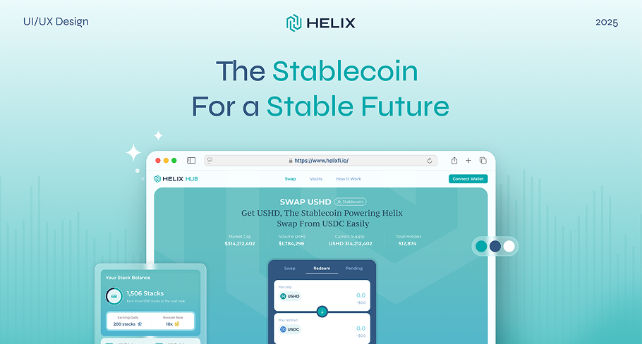

On-Time Delivery!
95% of projects shipped on time and within scope.
Helix is a real-world asset (RWA) tokenization platform bringing institutional-grade transparency to on-chain and off-chain deals. They needed an agile development partner to build their campaign and referral systems while maintaining strict delivery timelines.
Visit website →Released
Feb 2023
Client
Helix
Feature Usage
Real World Asset, Campaign, Referral
Key Results
$500M+ off-chain volume, 400+ deals closed
Collaboration Type: MVP Development
Cyberk partnered with Helix to design and build their RWA tokenization platform from the ground up. Our team worked closely with Helix's founding team to translate their vision for institutional-grade asset management into a production-ready product with campaign and referral capabilities.
Challenge
Helix needed to create a platform that could bridge traditional institutional finance with blockchain technology. The system required institutional-grade transparency for both on-chain and off-chain transactions, robust security to handle high-value deals, and a user experience polished enough to attract enterprise clients. All of this had to be delivered on tight timelines to stay ahead in the competitive RWA space.
Services Provided
Cyberk began with an intensive discovery phase, mapping out the complex regulatory and technical requirements of real-world asset tokenization. We designed a modular architecture that could support multiple asset types while maintaining compliance and security standards.
Our engineering team built the core RWA platform along with integrated campaign management and referral systems. Each feature was developed in agile sprints with continuous stakeholder feedback, ensuring alignment with Helix's product vision and institutional user requirements.
We delivered comprehensive testing at every stage — from unit tests and integration tests to end-to-end security audits — maintaining our 95% on-time delivery record while meeting the high quality bar required for financial infrastructure.

Results & Achievements
The Helix platform has achieved impressive milestones since launch:
- $500M+ in off-chain transaction volume processed through the platform
- 400+ institutional deals successfully closed
- 95% of all development milestones delivered on time and within scope